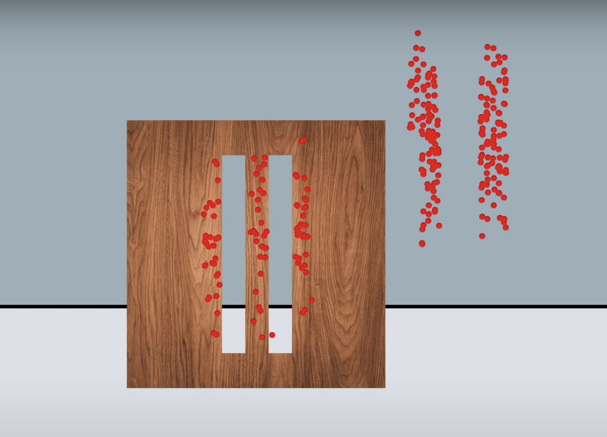
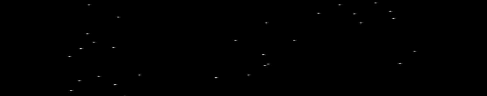
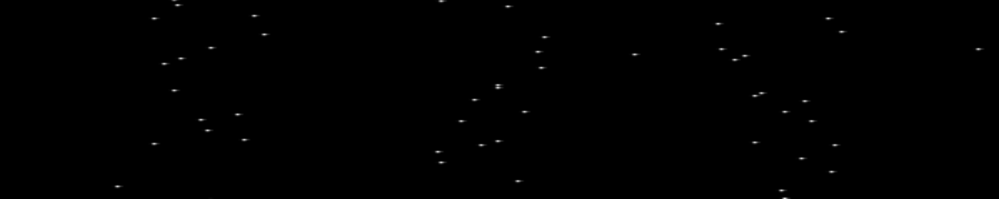
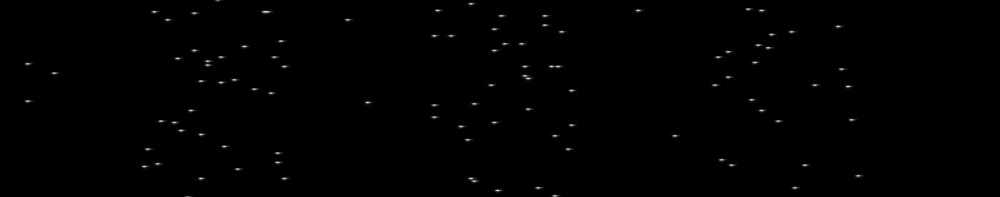
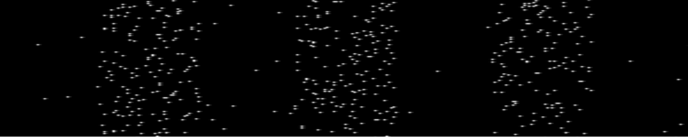
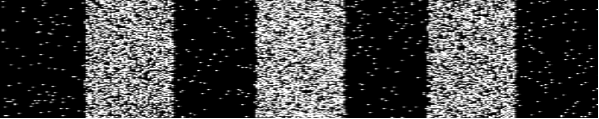
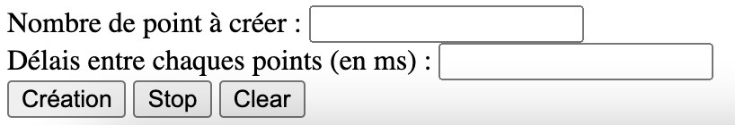

Expérience qui permet de répondre à la question : La lumière est-elle une onde ou un corpuscule ?
Si on prend l'exemple d'un fusil qui tire à travers deux fentes dans une planche on obtient le résultat suivant :
Résultat que l'on attend de manière intuitive, alors que se passe t-il lorsque l'on tire des photons avec un canon à photon à travers deux fentes ?
Une animation est disponible ici : Animation
lors des premiers tirs on pourrait déduire que le résultat donne des positions aléatoires
mais plus le temps avance et plus on discerne une figure particulière
   On peux voir au final une figure d'interférence ce qui correspond au comportement d'une onde. Et lorsque l'on essaie de comprendre par quel fente est passé le photon, via un système de détection, alors on obtiens la même figure lors du cas du tir au fusils
Sur la page de l'animation des fentes il y a deux champs à paramétrer :
Le nombre de point que l'on veut faire apparaitre sur la figure et le délais entre chaque animation et chaque apparition (si laissé vide alors pas d'animation et tout les points appraitrons en même temps
Au niveaux des boutons :